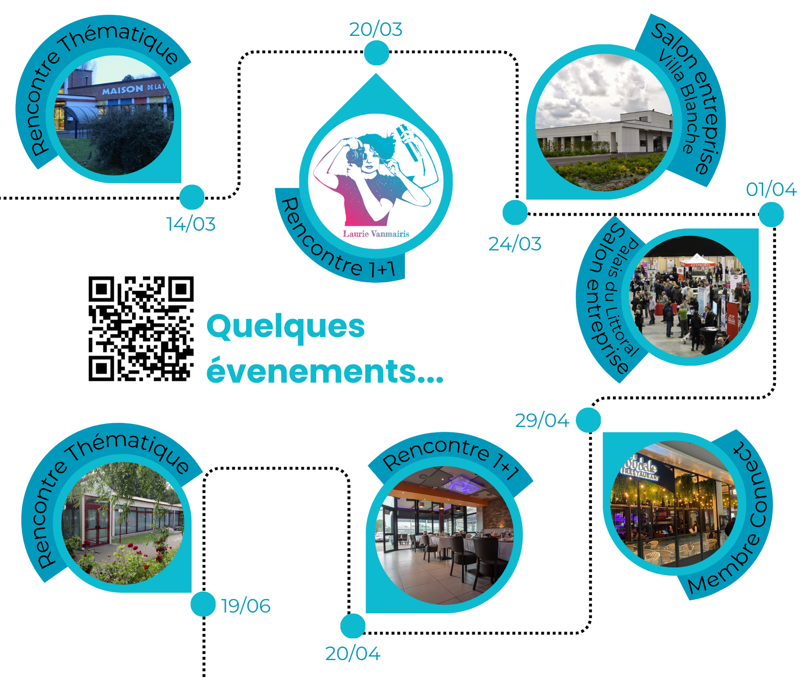
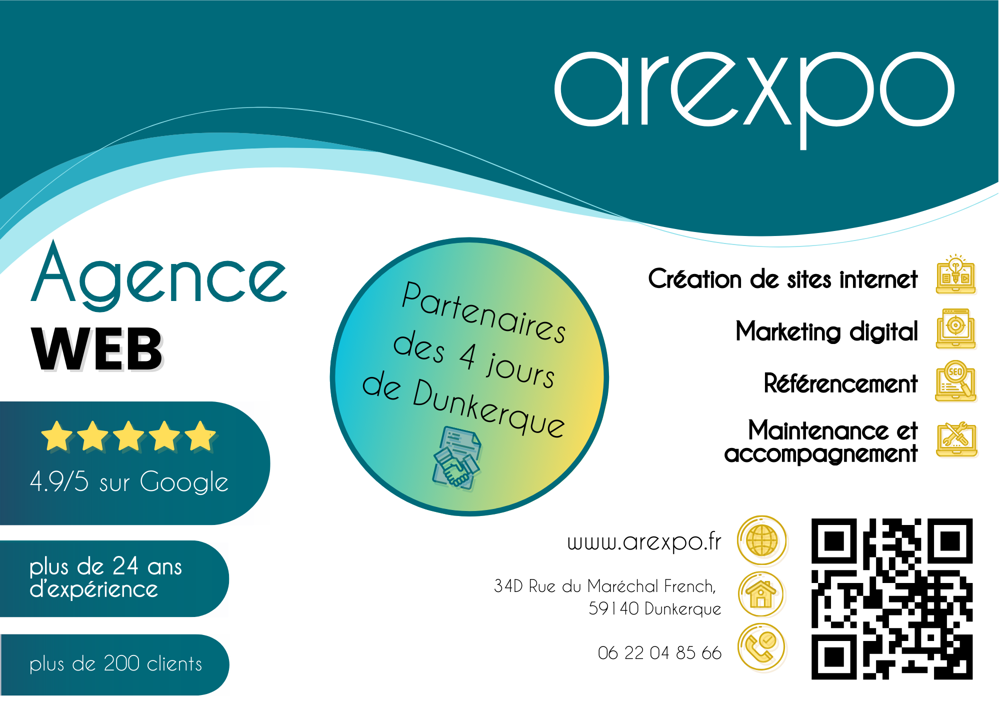
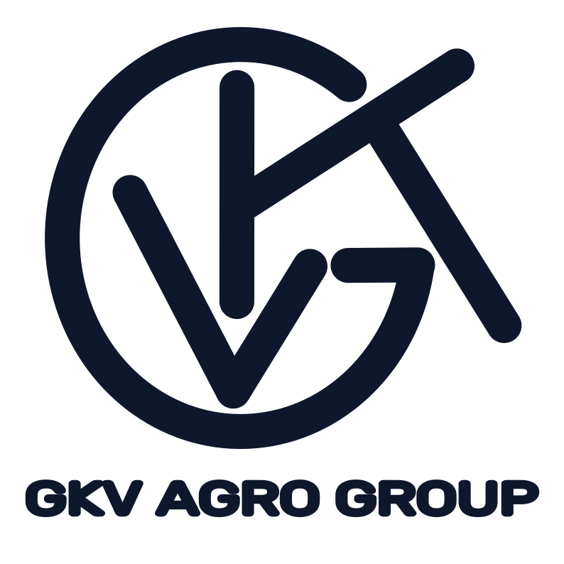

🖍️Projets🎨
Lylio Cassiau
Arexpo
Roll-Up


Durant mon stage chez AREXPO j’ai réaliser un ROLL UP.
Avec pour but d’attirer de la nouvelle clientèles sur des lieux d’évènements ou forums.
Sur le
ROLLUP il un UTM à été créer pour le QR code qui est un lien vers leur site web afin de recenser les
visiteur ayant accéder au lien via le ROLL UP.
Carte de visite


Durant mon stage chez AREXPO j’ai aussi réaliser une carte de visite pour Véronique
Dégardin, Chef
d’entreprise chez AREXPO.
Avec pour but de créer un moyen de communication simple, comprenant toute les information importante
et en suivant l’image et le style de l’entreprise.
Comme sur le ROLL UP , un UTM à été créer afin de
pouvoir recenser les personne ayant accéder a leur site web via ce QR code.
Emailing
Toujours durant mon stage chez AREXPO j’ai réaliser de l’emailing pour le club des
entreprises parmi laquelle la société faisait partie. Le CSPDKE (Club Saint Pol sur mer Dunkerque
Entreprise).
Ayant pour but d’avoir un visuel simple et facile de compréhension en en-tête de l’email j’ai
réaliser ceci.
Comme sur le ROLL UP et la carte de visite, un UTM à été créer afin de pouvoir recenser les personne
ayant accéder a la page Agenda du site web de l’association via ce QR code.
Flyer
Durant mon stage chez AREXPO j’ai pu réaliser un flyer, en mettant en valeur leur
partenariat avec les 4 Jours De Dunkerque.
Avec pour but d’attirer de la nouvelle clientèles.
Comme sur le ROLL UP et la carte de visite, un UTM à été créer afin de pouvoir recenser les personne
ayant accéder a la page Agenda du site web de l’association via ce QR code.
GKV Agro Group
Logo
Un membre de ma famille créant une entreprise en Agroalimentaire en Afrique, au Togo.
J’ai eu pour mission de réaliser un LOGO pour cette entreprise.
Avec un cahier de contraintes et un queqtionnaire réaliser par mes soins avec pour but de poser
les bonnes question sur les objectifs de l’entreprise et de l’identité visuelle, du publique cible
et des supports sur lequel celui-ci sera utiliser par la suite.
J’ai réaliser ce logo en
vectoriel afin de répondre au mieux aux contraintes.
Carte de visite


Pour l’entreprise GKV AGRO GROUP j’ai aussi réaliser une carte de visite pour Virginie
Malahieude, Directrice générale chez GKV AGRO GROUP.
Avec pour but de créer un moyen de communication simple, comprenant toute les information
importante et en suivant l’image et le style de l’entreprise.
Arlequin&co
Logo
Ayant comme projet de créer une entreprise de type atelier créatif j'ai imaginer et
créer mon propre logo.
Avec un cahier de contraintes et un questionnaire réaliser par mes soins avec pour but de
poser
les bonnes question sur les objectifs de l’entreprise et de l’identité visuelle, du publique
cible
et des supports sur lequel celui-ci sera utiliser par la suite.
J’ai réaliser ce logo en
vectoriel afin de répondre au mieux aux contraintes et aux objectifs.
Bannière

Pour mon projet d’entreprise j’ai aussi réaliser une bannière suivant le logo.